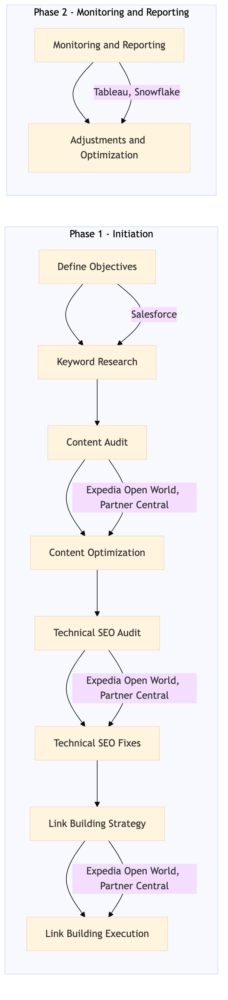

This process document outlines the SEO Strategy and Content Optimization for OTA Marketing Media and Loyalty within the Performance Marketing domain.
| Trigger | The initiation of a new marketing campaign or the need to improve existing SEO performance. |
| Outcome | Increased organic search traffic, improved keyword rankings, higher conversion rates from SEO-driven traffic, and enhanced user engagement on the website. |
| Systems | Expedia Open World Partner Central AWS SageMaker Snowflake Salesforce Tableau |

Click to enlarge
| Step | Name & Pain Point | Role | System | Input | Output | KPI | Flags |
|---|---|---|---|---|---|---|---|
| 1.1 | Define Objectives Lack of clear alignment between SEO goals and overall marketing strategy | SEO Specialist | Salesforce | Campaign goals, target audience, and KPIs | SEO objectives document | Clear, measurable objectives aligned with business goals | ⚠ Exception |
| 1.2 | Keyword Research Inadequate keyword research leading to poor targeting | SEO Specialist | AWS SageMaker, Snowflake | SEO objectives document | List of target keywords with volume and competition data | High-quality keyword list with a mix of long-tail and head terms | ⚠ Exception |
| 1.3 | Content Audit Overlooking important content areas or outdated information | SEO Specialist, Content Manager | Expedia Open World, Partner Central | Target keywords list | Audit report of existing content | Comprehensive audit covering all relevant pages and content types | ⚠ Exception |
| 1.4 | Content Optimization Poor execution of content optimization techniques | SEO Specialist, Content Manager | Expedia Open World, Partner Central | Audit report and target keywords list | Optimized content with improved meta tags, headers, and keyword usage | Increased relevance and quality of content based on SEO best practices | ⚠ Exception |
| 1.5 | Technical SEO Audit Ignoring technical SEO factors that can significantly impact rankings | SEO Specialist, IT Team | Expedia Open World, Partner Central | SEO objectives document | Technical SEO audit report | Identification of technical issues affecting SEO performance | ⚠ Exception |
| 1.6 | Technical SEO Fixes Delay in addressing critical technical SEO issues | SEO Specialist, IT Team | Expedia Open World, Partner Central | Technical SEO audit report | Resolved technical issues and updated site structure | Improved site speed, mobile-friendliness, and crawlability | ⚠ Exception |
| 1.7 | Link Building Strategy Lack of a strategic link building plan | SEO Specialist, Content Manager | Expedia Open World, Partner Central | SEO objectives document and target keywords list | Link building strategy plan | Defined approach for acquiring high-quality backlinks | ⚠ Exception |
| 1.8 | Link Building Execution Ineffective execution of link building activities | SEO Specialist, Content Manager | Expedia Open World, Partner Central | Link building strategy plan | Acquisition of high-quality backlinks | Increase in domain authority and link profile quality | ⚠ Exception |
| 1.9 | Monitoring and Reporting Lack of real-time data insights for decision-making | SEO Specialist, Data Analyst | Tableau, Snowflake | SEO objectives document | Regular performance reports and KPI tracking | Continuous monitoring of SEO metrics against set targets | ⚠ Exception |
| 1.10 | Adjustments and Optimization Resistance to change or lack of actionable insights from data | SEO Specialist, Data Analyst | Tableau, Snowflake | Performance reports and KPI tracking | Optimized SEO strategy based on data insights | Continuous improvement of SEO performance through iterative adjustments | ◆ Decision⚠ Exception |